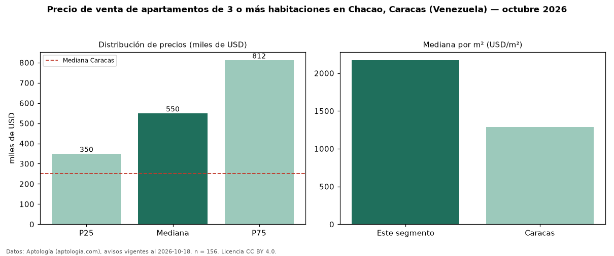

Precio de venta de apartamentos de 3 o más habitaciones en Chacao, Caracas (Venezuela) — octubre 2026
En Chacao, Caracas (Venezuela), la mediana de precio de venta de apartamentos de 3 o más habitaciones es USD 550.000, según 156 avisos vigentes. Eso es 120 % por encima de la mediana de Caracas para apartamentos de 3 o más habitaciones (USD 250.000). Por metro cuadrado, la mediana es USD 2.173/m² (n = 156 avisos con área), 68 % por encima de Caracas (USD 1.290/m²). Son 66 % de los 238 avisos de apartamentos en venta de la zona, cuya mediana general es USD 467.040 (+18 %). Con el precio por m² de alquiler del mismo segmento (USD 13,10/m² al mes), la rentabilidad bruta implícita es 7,2 % anual (aproximación con medianas de ofertas distintas). El área mediana anunciada es 228 m². La mitad central de los avisos va de USD 350.000 a USD 812.500 (razón 2,3), una dispersión alta. Datos: Aptología (aptologia.com), CC BY 4.0 — https://www.aptologia.com/ve/venta/caracas/chacao. Archivos: PDF, CSV con las cifras y gráfica PNG.

| Avisos únicos | 156 |
|---|---|
| Percentil 25 | COP 350.000 |
| Mediana | COP 550.000 |
| Percentil 75 | COP 812.500 |
| Mediana por m² | COP 2.172 |
Fuente: avisos vigentes de portales inmobiliarios recopilados por Aptología, deduplicados (mínimo 30 avisos únicos por celda). Precios pedidos, no cerrados. Fecha: 2026-10-18.